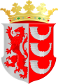
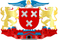
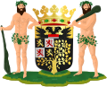

Eindhoven is een stad en gemeente in het zuidoosten van de Nederlandse provincie Noord-Brabant, gelegen in de Brabantse Kempen. Het is naar inwonertal al sinds 1961 de vijfde gemeente van Nederland. Ze telt 243.669 inwoners op een grondgebied van 88,84 km². Ze omvat naast de gelijknamige stad Eindhoven tevens het dorp Acht en de uitbreidingslocatie Meerhoven.
Bron: Wikepedia
Tilburg is een gemeente in de Nederlandse provincie Noord-Brabant. De gemeente Tilburg omvat naast de gelijknamige stad Tilburg tevens de dorpen Berkel-Enschot, Udenhout en Biezenmortel. Per 31 januari 2023 had de gemeente 227.794 inwoners, waarmee het de zevende gemeente van Nederland is. Tilburg maakt deel uit van stedelijk netwerk BrabantStad. In het Tilburgs dialect spreekt men van Tilbörg.
Bron: Wikepedia

Breda is een Nederlandse stad in het westen van de provincie Noord-Brabant. Breda is van oudsher de voornaamste stad van West-Brabant. Het was de hoofdstad van de Baronie van Breda, waaronder onder meer ook Roosendaal, Etten-Leur en Oosterhout ressorteerden. De stad zelf is de kern van de gelijknamige gemeente, die per 31 januari 2023 186.504 inwoners telde, en daarmee in grootte de derde gemeente van Noord-Brabant is en de negende gemeente van Nederland. De inwoners worden Bredanaren of Bredanaars genoemd.
Bron: Wikepedia

's-Hertogenbosch, officieus Den Bosch genoemd, is de hoofdstad van de provincie Noord-Brabant. Tevens is het de hoofdplaats van de gemeente 's-Hertogenbosch. De stad draagt de bijnaam 'Moerasdraak'. Deze naam heeft de stad overgehouden aan haar rol in de Tachtigjarige Oorlog. 's-Hertogenbosch was toen een vestingstad omringd door moeras zoals Het Bossche Broek en de Moerputten, waardoor de stad 'onneembaar' werd geacht.
Bron: Wikepedia